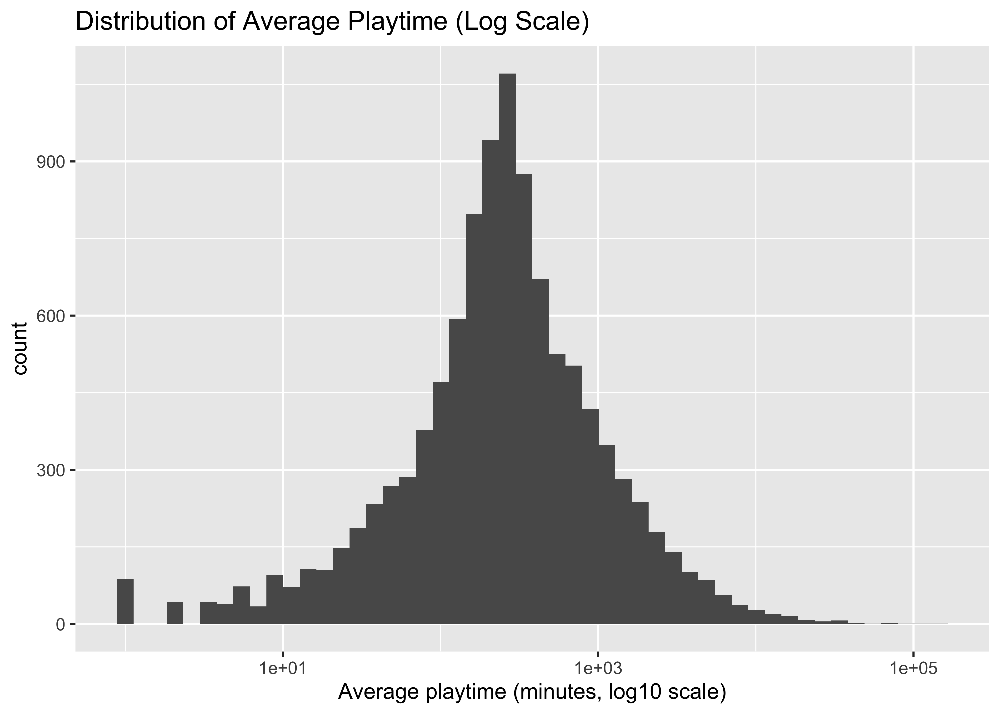
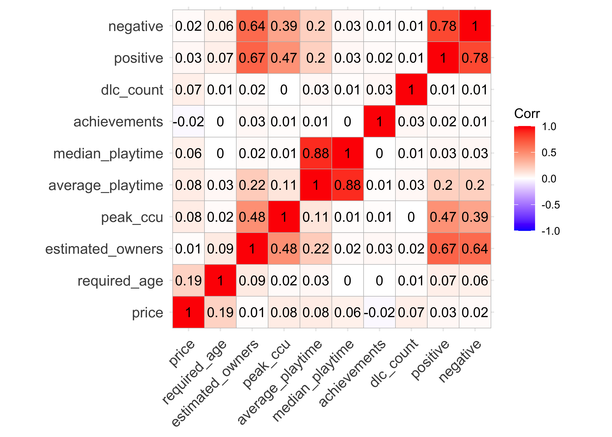

Video game industry is a highly competitive market where thousands of new products are released annually. For developers, understanding the specific factors that drive player engagement is important when allocating their resources. For players facing an overwhelming number of choices, identifying games that align with their interests is a challenge. This project is motivated by both the need to bridge this gap and our enthusiasm towards gaming: by analyzing real-world data from Steam, we aim to build a predictive model that can estimate a game’s popularity based on pre-release information.
Our major questions is: What are the primary drivers of game popularity on Steam?
As we explored the dataset, this question evolved into more specific hypotheses: “Does a higher price point correlate with higher quality and thus more playtime?” “Is the relationship between price and engagement non-linear, perhaps differing for Indie vs. AAA titles?” “Do critical reviews (Metacritic) serve as a better predictor of peak concurrent users than user reviews?” “Can the number of DLCs act as a proxy for a game’s longevity?”
The dataset used for this project is made possible by FronkonGames and is sourced at huggingface.co.
The author provides an official python script to scrape this dataset, it can be viewed here. Additionally, we did some sampling from local. The chunk below converted a dataframe of 110000 rows to 10629 rows to pass Github’s file uploading size. It is not meant to be ran.
During the cleaning process, our pipeline aims to:
-Make sure variable names are consistent across columns
-Select only the unique identifier and necessary variables for our popularity analysis
-Make sure continuous variables are numeric
-Make sure release_date is in date format
-Convert the estimated_owners from a range to a numeric
value by taking the midpoint
-Make sure no zeros or NAs are present in
average_playtime, median_playtime and
peak_ccu as they are meaningless in these columns
steam_df = read_csv("data/steam_games.csv") |>
janitor::clean_names() |>
select(
app_id, name, release_date, price, required_age,
estimated_owners, peak_ccu, average_playtime, median_playtime,
achievements, dlc_count, developers, publishers,
categories, genres, tags, positive, negative
) |>
mutate(
price = as.numeric(price),
required_age = as.numeric(required_age),
achievements = as.numeric(achievements),
dlc_count = as.numeric(dlc_count),
positive = as.numeric(positive),
negative = as.numeric(negative),
release_date = mdy(release_date)
) |>
mutate(estimated_owners = str_extract(estimated_owners, "\\d+"),
estimated_owners = as.numeric(estimated_owners)) |>
filter(
average_playtime > 0,
median_playtime > 0,
peak_ccu > 0
)app_id: Unique identifier of each game
name: Game name on Steam
release_date: Official releasing time in yyyy-mm-dd
price: Price in USD
estimated_owners: Rough estimate of owners
peak_ccu: Peak number of online concurrent users
average_playtime, median_playtime: Playtime since March 2009, in minutes
dlc_count: Number of DLCs (expansion or extra chapters sold separately from the game)
developers, publishers: Creator of the game / Seller of the game
categories: Type of the game
genres: Theme of the game
tags: Tags added by users
positive, negative: Number of positive / negative reviews by user on Steam
In this study, we define “popularity” with playtime and peak concurrent users. Let’s first look at the distribution of average time of these games. Note that playtime data is heavyly tailed (most games are barely played, and a few games dominate), so we apply a log transformation here to see a meaningful distribution and avoid outliers.
average_playtime_distribution = steam_df |>
ggplot(aes(x = average_playtime)) +
geom_histogram(bins = 50) +
scale_x_continuous(trans = "log10") +
labs(
title = "Distribution of Average Playtime (Log Scale)",
x = "Average playtime (minutes, log10 scale)"
)
average_playtime_distribution
steam_numeric = steam_df |>
select(price, required_age, estimated_owners,
peak_ccu, average_playtime, median_playtime,
achievements, dlc_count, positive, negative)
steam_numeric |>
cor(use = "complete.obs") |>
ggcorrplot(lab = TRUE)